一步步帶您了解如何使用 LlamaIndex 與 Claude 完成文獻處理與手稿修改
到 https://cloud.llamaindex.ai/ 利用免費額度將 pdf (在付費牆之後的文獻 pdf 檔) 或 docx 轉成 .md 檔
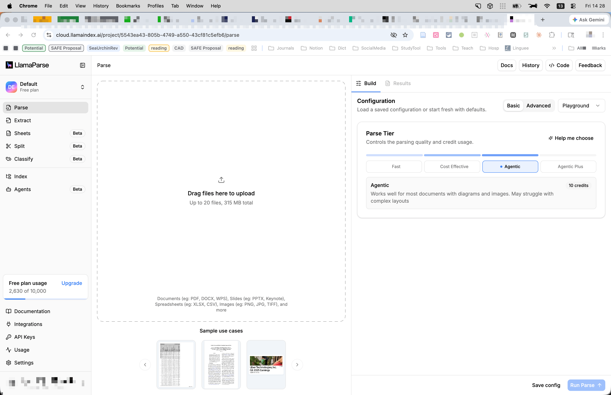
到 llamaindex.ai 的 history 看轉檔進度，逐一打開下載
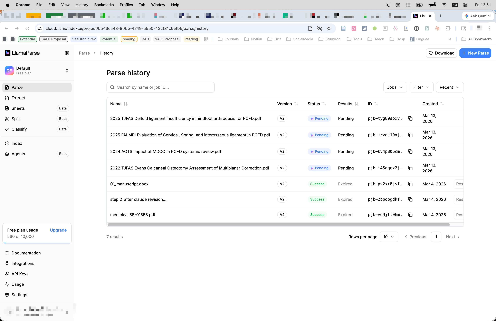
解說下載按鈕
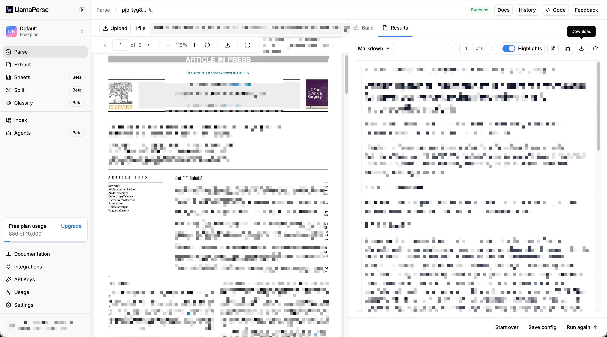
打開 Claude Desktop App，點選 Cowork，選擇 Work in folder（有剛剛下載的 references 的 markdown 檔案的資料夾，還有草稿 .docx）
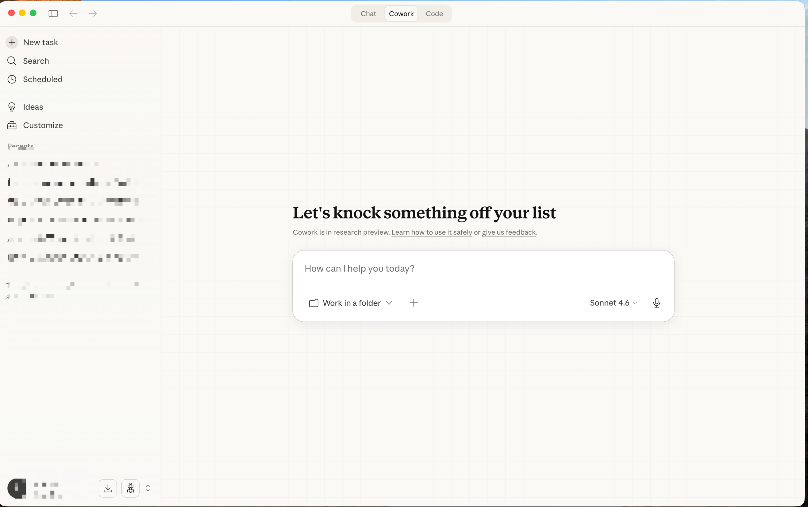
輸入 Prompt：
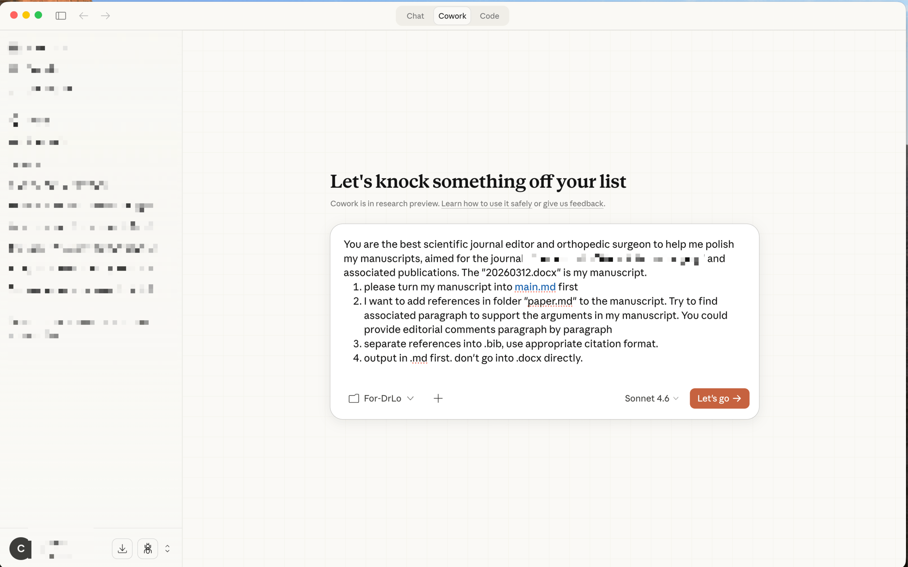
進行過程，右邊會列出 AI 認為資料夾相關的檔案，或經由 AI 新產生的檔案
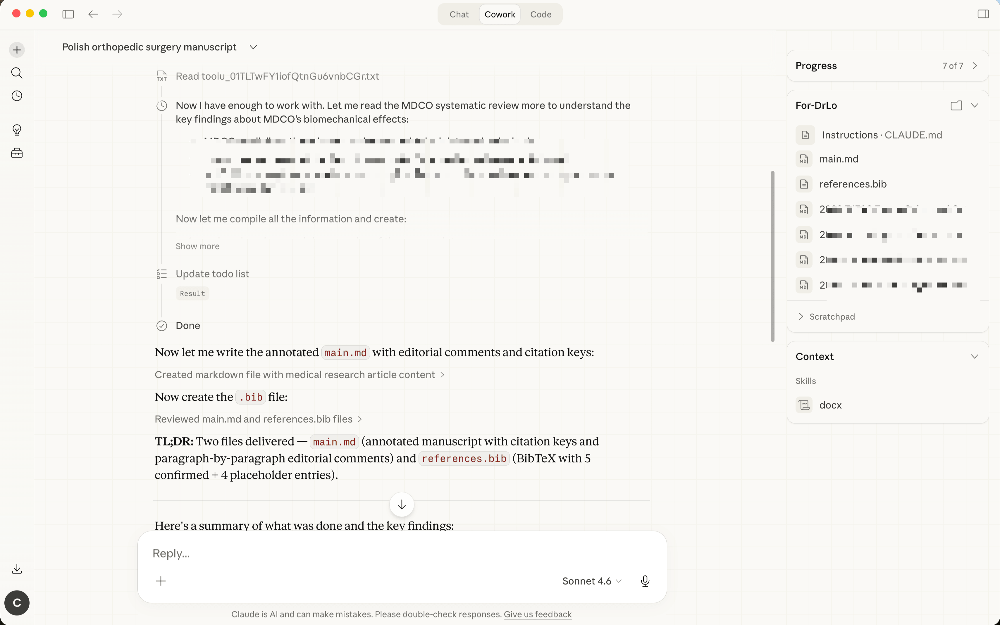
可以點選任何檔案，如果是 .md 可以直接在右欄顯示內容，如果針對想要修改的部分，可以複製貼到左下角 prompt 欄，針對該部分進行修改（如： 這段請縮減50%，或加入某某文獻）
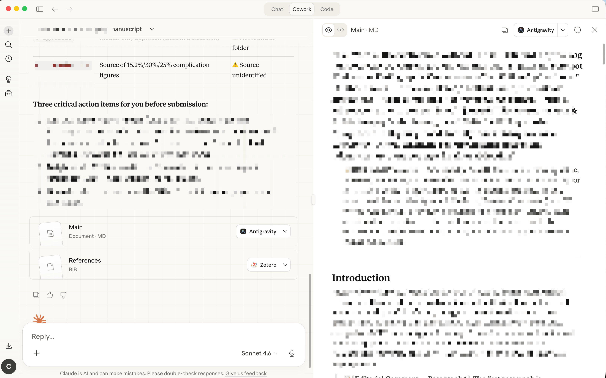
再針對 AI 給的 Editorial Comments 給予回應
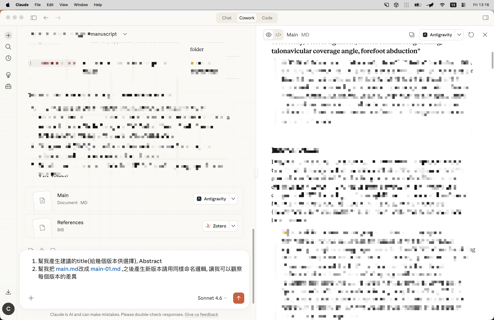
再針對 AI 給的 Editorial Comments 給予回應 (同上操作)
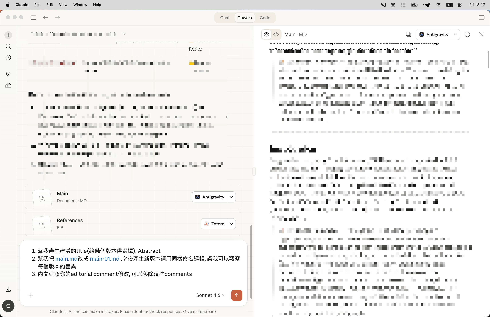
這裡請 AI 將每個版本另存一份，方便後續追溯比較
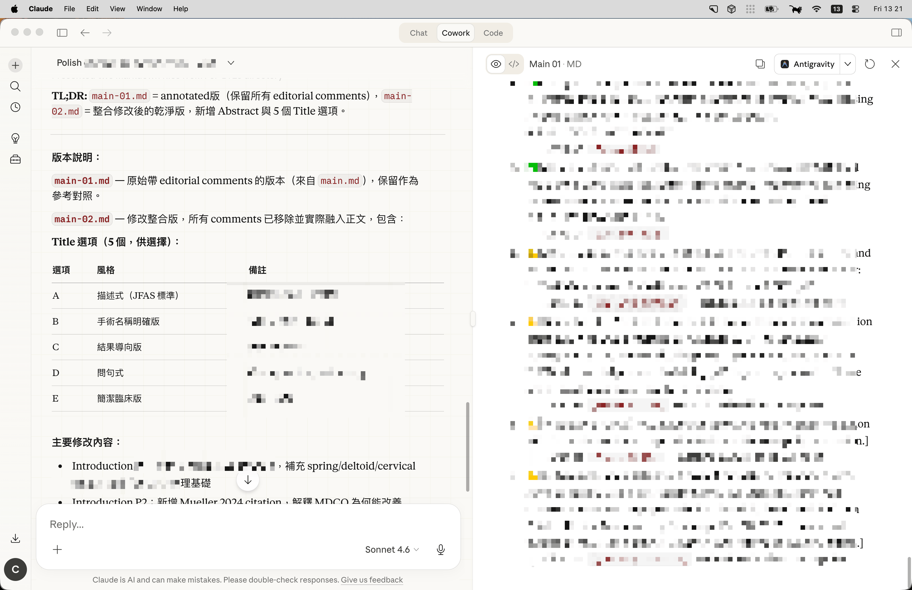
同前頁（儲存新版本）
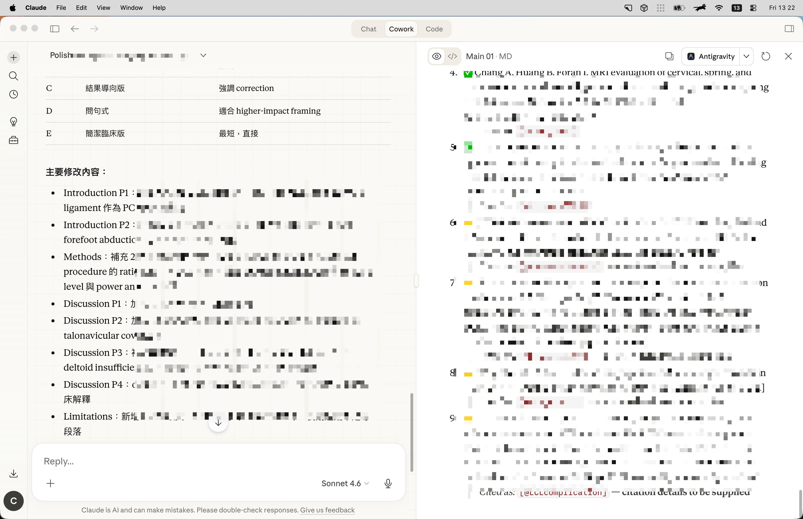
加入更多 .md 格式的文獻，並請 AI 將這些文獻加入到 manuscript 中
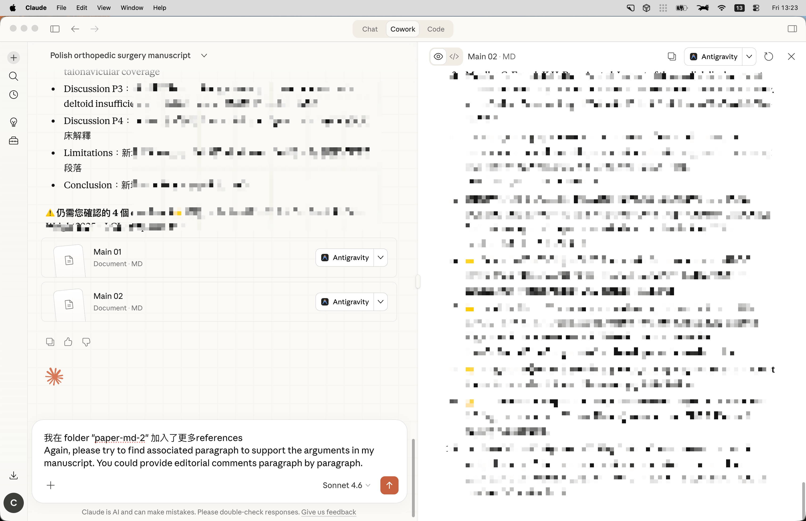
再存成另一個版本，完稿看過沒問題，請 AI 轉成 .docx 格式，就可以到資料夾拿成果了
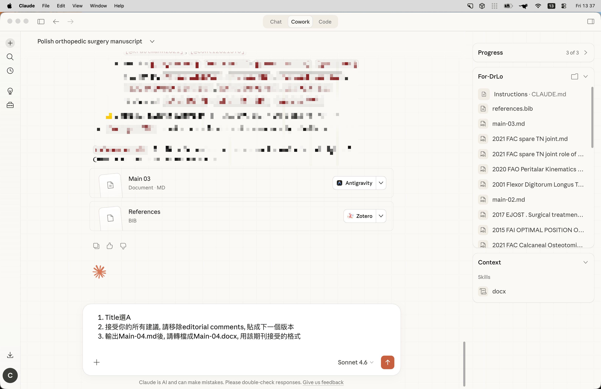